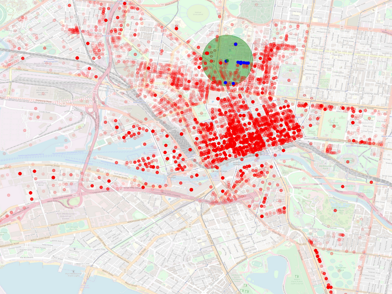

Melbourne Search Program
For this project I was tasked with implementing a program that would take a search query such as "University of Melbourne" and would return the coordinates of the query. When the program runs it reads a csv with all the data and stores it all in a kd tree. It then waits for an input from the user and searches the kd tree for the coordinates. The purpose of this project was to learn how to implement kd trees and their accompanying search algorithms. This was all done in C.